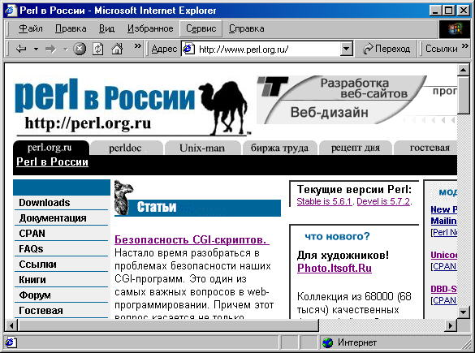

Выполнение команд на сервере, работа с файлами и СУБД
Помимо размера переменных необходимо проверять их актуальность, т.е.
принадлежность к определенному типу данных и допустимому диапазону значений.
Например, рост, вес и цена не могут быть отрицательными, а адрес электронной
почты, адрес сайта и телефон имеют строго определенный формат и допустимый набор
символов.
Наиболее важным и распространенным случаем проверки допустимости значения параметра
является использование данного параметра при выполнение команды на сервере, отправки
запроса в базу данных или же при любом другом взаимодействие CGI-скрипта со внешней
средой. Совсем недавно мною была обнаружена такого рода ошибка на нашем веб-сайте
http://perl.org.ru. На этом сайте уже более полугода
работал скрипт, который позволял получать справку по различным командам.

Посетитель
сайта вводил команду в поле ввода и нажимал кнопку показать. Запрос отправлялся на сервер,
где CGI-скрипт выполнял команду 'man $userparam'. Параметр пользователя фильтровался на
разные спецсимволы типа "';| и т.п. Но на амперсанд (&) фильтра не было, поэтому когда
я ввел: "rm&&ls -l", мне после справки на команду rm, сервер выдал содержание текущей
директории. Два && для Unix shell служат разделителем команд, и Unix shell выполняет
команды разделенные && последовательно.
Злоумышленник дал бы другую команду: "ls&&rm -r /". Для тех, кто не знаком с
операционной системой Unix, 'rm -r /' означает рекурсивное удаление всех данных сервера.
В нашем случае такая команда не привела бы к полному удалению всех данных, т.к. данная
программа выполняется c правами определенного пользователя и были бы удалены только данные
этого пользователя.
Дмитрий Нечволод, специалист по информационной безопасности из
Digital Infinity (http://diginf.ru), рассказал мне более интересную историю, когда
на сервере предоставляющем бесплатные акаунты типа chat.ru при регистрации в поле логин
он ввел что-то наподобие: "username&&rm -r /". В этом случае при заведение нового
пользователя CGI-скрипт должен работать с правами суперпользователя (администратора)
и в данном случае было удалено все содержимое сервера.
Далее приведен список символов, которые необходимо фильтровать при выполнение команд
в Unix shell: &;`'\"|*?~<>^()[]{}$\n\r. Еще лучше построить алгоритм фильтрации не по
принципу, что не запрещено, то разрешено, а наоборот, т.е. пропускать только допустимые
символы, например буквы и цифры. При вызове в языке Си функций system, popen и любых других,
тщательно проверяйте, что вы им передаете в качестве параметров, т.к. это наиболее страшная
дыра в безопасности CGI-программ.
Особо хочется заострить внимание на связи с базами данных. При выполнении SQL-запросов
тоже необходимо производить фильтрацию CGI-параметров на допустимость значений, а также
экранировать спецсимволы. Например, при работе MS Access необходимо экранировать апостроф, заменяя
его на двойной апостроф. Помимо апострофа есть и другие спецсимволы языка SQL, например %.
В MySQL API есть функции mysql_escape_string и mysql_real_escape_string(),
которые экранируют специальные символы в строке. Но эти функции экранируют только следующие символы в строке:
(ASCII 0), '\n', '\r', '\', ''', '"', и Control-Z. При использовании CGI-параметра в условии
WHERE или HAVING есть еще два символа, которые необходимо экранировать - это '%' и '_'.
При выполнении запроса SELECT * FROM tablename WHERE login='_fox' будет выдана не одна запись
со значением логина '_fox', а все записи с логинами из четырех символов, где последнии
три символа fox. Если при выполнении запроса типа SELECT такого рода ошибка быстро обнаружится,
то при выполнении запроса типа DELETE, ошибка скорее всего будет обнаружена не сразу, и самое
главное, что последствия уже будут катастрофическими.
|